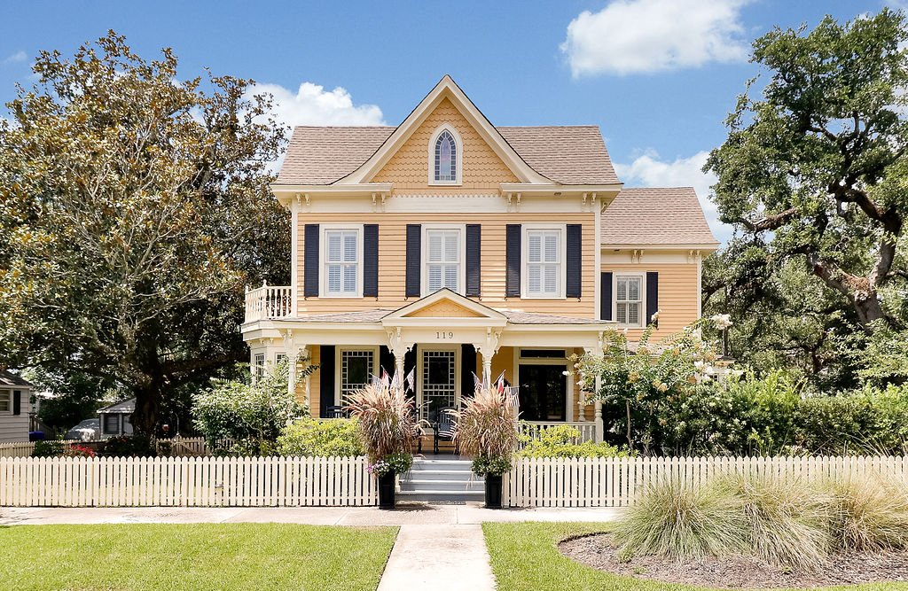

History of 119 North Lord Street, the Robert Ruark Inn

“I got to thinking about all the things that had happened to me with that House as a base; all the things I had done, all the things I had learned in that House and from that House. Most of the things that I value today had started in that House . . . That House combined Christmas and Thanksgiving and Easter and summertime, in an ordered world of guns and dogs and boats and fish and ducks and quail . . . That was not just a house, that House was Me,” Robert Ruark, The Old Man’s Boy Grows Older.
History of 119 North Lord Street, the Robert Ruark Inn
The house at 119 North Lord Street, today known as the Robert Ruark Inn, was built in 1890 by the Daniel Brothers, the same craftsmen responsible for its sister house, “The Craig House” across the street, as well as portions of Trinity Methodist Church. All three buildings share the signature beadboard walls for which the Daniel Brothers were known. Much of what visitors admire today was already here in 1890: the beadboard throughout the main rooms and hallway, the staircase and banister, the Southport bows, most of the trim work, the first-floor lancet windows and stained glass windows, the floors in the original section of the house (excluding the kitchen), the interior doors, the front and dining room doors, and the four fireplaces,.
Origins of the House and the Adkins Family
Captain Edward Hall Adkins, known locally as Hawley, commissioned the Late Victorian home which was very popular at the time. It has a blend of Queen Anne and Folk Victorian elements, characterized by its front gable, broad porch and decorative trim. Captain Adkins and his wife Lottie raised their two daughters here. Their daughter, Charlotte, married Robert Clyde Ruark and moved to Wilmington. In 1915 their son, Robert (Bobby) Chester Ruark Jr., who would grow up to become one of North Carolina’s most celebrated writers, was born.
A Boyhood Home That Became Literature
As a young boy, Bobby’s grandparents’ house in Southport, became the center of his world. He spent weekends, holidays, and long summers under this roof, hunting, fishing, and soaking in stories from his grandfather, Captain Adkins. Many of the memories later immortalized in his bestselling works The Old Man and the Boy and The Old Man’s Boy Grows Older were formed right here. Even the old Magnolia tree in the garden was included in his stories. Ruark once wrote that this house was not just a house. He said, “That house was me.”
Loss, Recovery, and Restoration
After Captain Adkins died in 1932, the house fell into foreclosure. The lienholder, known by the family as The Skinflint, refused to sell it to anyone outside the family. In 1948, by then an established writer with national success, Robert Ruark bought the house back by paying exactly what was owed on it. He placed his parents and aunt here so the home could remain in family hands. By the time Ruark died in 1965, the house stood empty. A family purchased it from his estate in 1966 and lived here for decades before selling it to builder Jeff Ward in 2007.
Ward completed a meticulous restoration in 2009, preserving the home’s character while adding modern comforts such as ensuite baths for every room, a “keeping room” off the kitchen, a courtyard, and a gourmet kitchen designed for entertaining or innkeeping. He hired a professional decorator who specialized in historic homes to help with colors, lighting, and other design features. In 2012, the current owners, Rick and Linda Pukenas, purchased it and reopened it as the Robert Ruark Inn. Through the years, they upgraded and replaced much of the antiques and furnishings and grew the business into an award-winning Inn.
While living outside of Philadelphia on the NJ side, Rick and Linda would weekend in Cape May, NJ where they fell in love with the coast (shore) and the beauty of bed and breakfasts. Avid antique collectors, they dreamed of owning one themselves. After moving to Wake Forest and building a beach house on Oak Island, they fell in love with Southport! They often say it is a “baby Cape May.” After returning to NC from two years in the Caribbean, they were ready to take a “leap of faith” and leave their careers in the corporate and educational worlds to become Inn/business owners. They loved it and grew the business and guest list immensely.
Owning a B&B is many people’s pipedream. Visitors are often curious to know what it’s really like.
Have any celebrities stayed here?
The Robert Ruark Inn has welcomed visitors from all over the world, including a few celebrities such as Katherine Heigl of Grey’s Anatomy. Over a third of its guests return again and again, drawn by the quiet charm of Southport, the comfort of the inn, and the sense of history that seems to live in the walls.
Where do the owners/Innkeepers live WHEN operating as an Inn?
Off the kitchen there is a second staircase to their suite. The area from the kitchen back is not open to the public when operating as a B&B.
Is it still a Bed & Breakfast?
Yes… but it was closed a lot in 2025 due to the owners’ schedules. Plans are to reopen in 2026 on a selected/limited schedule.
Is it hard being an innkeeper?
It depends on what you did before. And…how organized you are. Having a passion for welcoming people and hospitality is also important.
Were the owners Innkeepers before?
No. Lived outside of Philadelphia in Medford NJ, fell in love with B&Bs in Cape May, NJ and took a leap of faith retiring from the educational and corporate worlds.
How much to stay at the Inn?
The rates are $295 and $325 per night/room plus taxes
Other interesting facts:
Although the Inn is named after Robert Ruark, he never lived here full-time. Robert Ruark’s life and writing were often compared to Ernest Hemingway, but the two never met. One of the owners, Linda, has an identical twin sister who also owns an Inn down the street (Captain Newton’s Inn). The other owner, Rick, is an avid history buff. Both Linda and Rick love collecting antiques and other vintage items. Over 35% of the Inn’s guests are repeat guests. Some are now friends living in Southport. Others have traveled as far as Prague, Madeira and Italy a couple times. Most loved part of owning 119 N. Lord Street is the neighbors and Southport overall. Includes the history of the house and the area. If anyone wants paint colors or more information on anything, please email the owners at “info@RobertRuarkInn.com”.